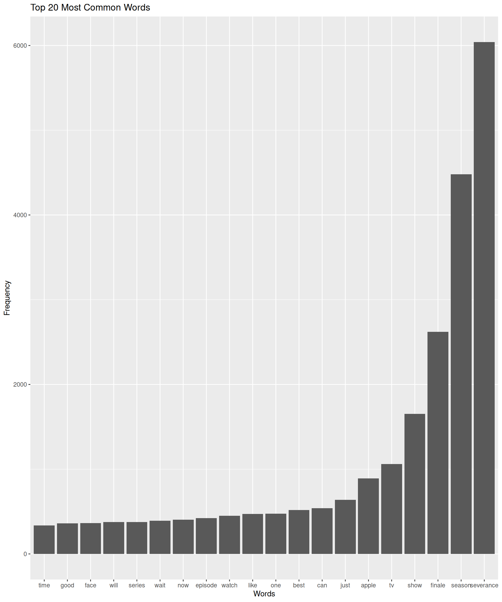
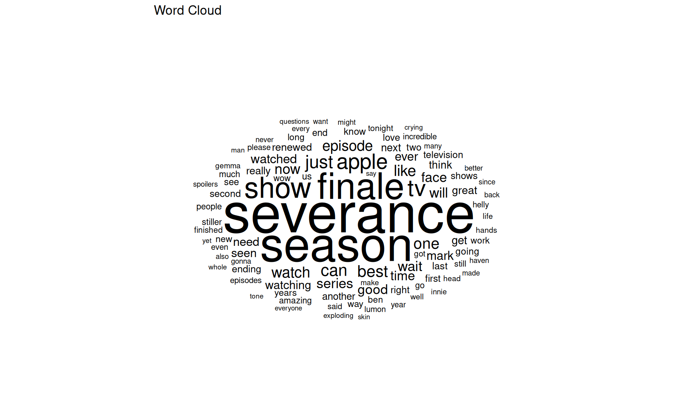
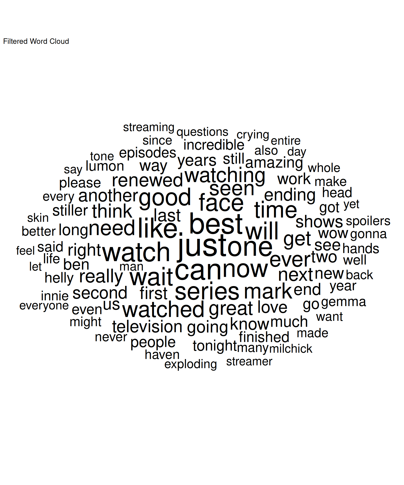
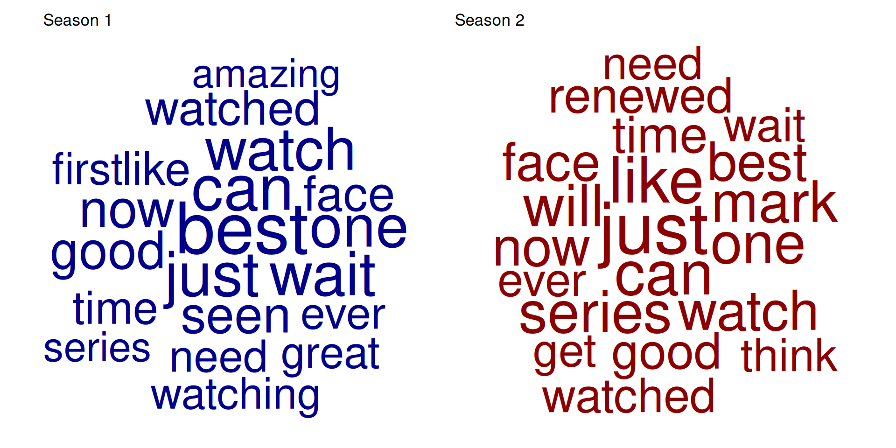
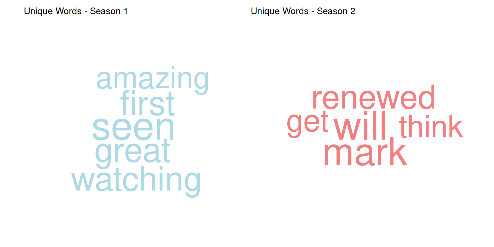

# Load necessary libraries
library(tidyverse)
library(tidytext)Basic word frequencies
In this chapter, we will explore some basic techniques for analyzing text data.
Importing the Data
# Load the text data
comments <- readr::read_csv("data/clean/comments_preprocessed.csv") # Adjust the path to your data locationExplore the first few rows of the dataset to understand its structure.
head(comments)# A tibble: 6 × 3
...1 id comments
<dbl> <chr> <chr>
1 1 s1_0001 everyone telling watch severance nobody tryna watch apple
2 2 s1_0002 can quite explain show severance captivating far
3 3 s1_0003 full body clench entire second half severance season finale gri…
4 4 s1_0004 one greatest movie series ever seen
5 5 s1_0005 severance apple tv delivered best season finale seen years fire
6 6 s1_0006 severance apple fire We can see that the dataset is imported as a tibble with three columns: ..1, id, and comments. We are going to focus on the comments column for our text analysis, but the id column can be useful for grouping or filtering the data by season.
Word Frequency Analysis
Word frequency analysis is one of the most fundamental techniques in text analysis. It helps us understand which words appear most often in our texts and can reveal important patterns about content, style, and themes.
Word Counts
We can start by calculating the frequency of each word in our corpus. This involves tokenizing the text into individual words, counting the occurrences of each word, and then sorting them by frequency.
Tokenization is the process of breaking down text into smaller units, such as words or phrases. In this case, we will use the unnest_tokens() function from the tidytext package to tokenize our comments into words.
NoteWhy not use strsplit()?
While the strsplit() function can be used for basic tokenization, it lacks the advanced features provided by unnest_tokens(), such as handling punctuation, converting to lowercase, and removing stop words. Using unnest_tokens() ensures a more accurate and efficient tokenization process, especially for larger datasets.
# Tokenizing the comments into words
tokens <- comments %>%
unnest_tokens(word, comments)
head(tokens)# A tibble: 6 × 3
...1 id word
<dbl> <chr> <chr>
1 1 s1_0001 everyone
2 1 s1_0001 telling
3 1 s1_0001 watch
4 1 s1_0001 severance
5 1 s1_0001 nobody
6 1 s1_0001 tryna Note that the resulting tokens tibble contains a column named word, which holds the individual words extracted from each comment.
With this tokenized data, we can now counting words. For instance, just simply counting the occurrences of each word:
# Counting word frequencies
word_counts <- tokens %>%
count(word, sort = TRUE)
head(word_counts)# A tibble: 6 × 2
word n
<chr> <int>
1 severance 6040
2 season 4480
3 finale 2620
4 show 1652
5 tv 1060
6 apple 890This will give us a list of words along with their corresponding frequencies, sorted in descending order. We can also visualize the most common words using a bar plot or a word cloud.
# Visualizing the top 20 most common words
top_words <- word_counts %>%
top_n(20)Selecting by nggplot(top_words, aes(x = reorder(word, n), y = n)) +
geom_bar(stat = "identity") +
labs(title = "Top 20 Most Common Words", x = "Words", y = "Frequency")
We can also create a word cloud to visualize word frequencies in a more engaging way.
# Creating a word cloud
library(ggwordcloud)
ggplot(word_counts %>% top_n(100), aes(label = word, size = n)) +
geom_text_wordcloud() +
scale_size_area(max_size = 20) +
theme_minimal() +
coord_fixed(ratio = 1) +
labs(title = "Word Cloud")Selecting by n
As expected, even in a preprocessed corpus, some words become dominant due to their frequent usage. In this case, “severance”, “season”, and “finale”, pop up as the most frequent words. To get a more meaningful analysis, we can filter out these common words.
# Filtering out common words for a more meaningful word cloud
common_words <- c("severance", "season", "appleTV", "apple", "tv", "show", "finale", "episode") # you can expand this list as needed
filtered_word_counts <- word_counts %>%
filter(!word %in% common_words)
# Creating a filtered word cloud
ggplot(filtered_word_counts %>% top_n(100), aes(label = word, size = n)) +
geom_text_wordcloud() +
scale_size_area(max_size = 20) +
theme_minimal() +
coord_fixed(ratio = 1) +
labs(title = "Filtered Word Cloud")Selecting by n
Now we have a more distributed word cloud that highlights other significant words in the corpus.
Words by Season
A simple but effective way to analyze text data is to compare word frequencies across different categories or groups. In this case, we can compare the word frequencies between different seasons of the show.
# Filtering and creating word clouds by season
season_1_tokens <- tokens %>%
filter(grepl("^s1", id)) %>%
count(word, sort = TRUE) %>%
filter(!word %in% common_words) %>%
top_n(20)Selecting by nseason_2_tokens <- tokens %>%
filter(grepl("^s2", id)) %>%
count(word, sort = TRUE) %>%
filter(!word %in% common_words) %>%
top_n(20)Selecting by nlibrary(patchwork)
p1 <- ggplot(season_1_tokens, aes(label = word, size = n)) +
geom_text_wordcloud(color = "darkblue") +
scale_size_area(max_size = 20) +
theme_minimal() +
coord_fixed(ratio = 1) +
labs(title = "Season 1")
p2 <- ggplot(season_2_tokens, aes(label = word, size = n)) +
geom_text_wordcloud(color = "darkred") +
scale_size_area(max_size = 20) +
theme_minimal() +
coord_fixed(ratio = 1) +
labs(title = "Season 2")
p1 + p2
We can even select the 50 more frequent words per season and extract those that are unique to each season.
# Finding unique words per season
top_50_s1 <- season_1_tokens %>%
top_n(50) %>%
pull(word)Selecting by ntop_50_s2 <- season_2_tokens %>%
top_n(50) %>%
pull(word)Selecting by nunique_s1 <- setdiff(top_50_s1, top_50_s2)
unique_s2 <- setdiff(top_50_s2, top_50_s1)
unique_s1_tokens <- season_1_tokens %>%
filter(word %in% unique_s1)
unique_s2_tokens <- season_2_tokens %>%
filter(word %in% unique_s2)
# Displaying unique word clouds for each season
p3 <- ggplot(unique_s1_tokens, aes(label = word, size = n)) +
geom_text_wordcloud(color = "lightblue") +
scale_size_area(max_size = 20) +
theme_minimal() +
coord_fixed(ratio = 1) +
labs(title = "Unique Words - Season 1")
p4 <- ggplot(unique_s2_tokens, aes(label = word, size = n)) +
geom_text_wordcloud(color = "lightcoral") +
scale_size_area(max_size = 20) +
theme_minimal() +
coord_fixed(ratio = 1) +
labs(title = "Unique Words - Season 2")
p3 + p4
This analysis allows us to see which words are more prominent in each season, providing insights into the themes and topics that were more relevant during those times.
With these basic text analysis techniques, we can start to uncover patterns and insights from our text data. Although simple, these methods are helpful to explore the content and structure of the text, setting the stage for more advanced analyses, or even informing about the quality of the pre-processing steps applied to the data.